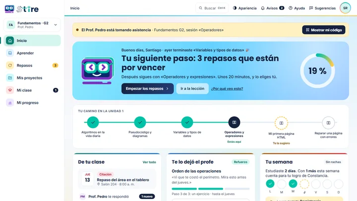
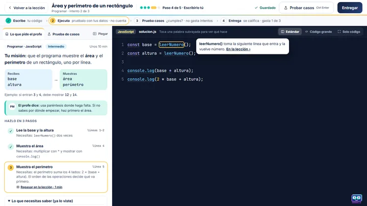
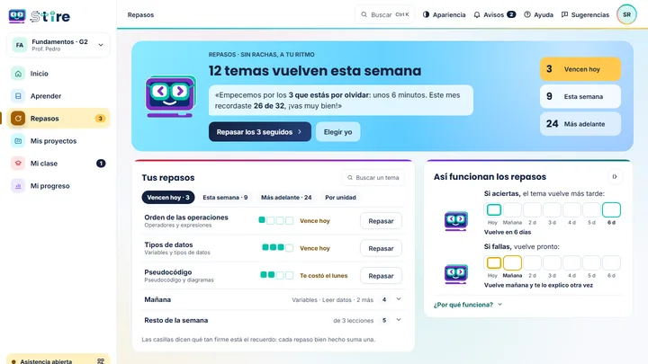
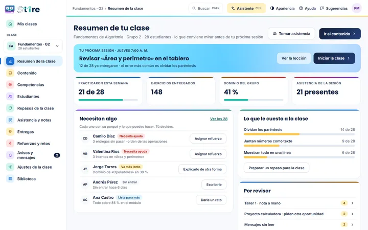

Lecciones cortas, práctica con ayuda por pasos y repasos que vuelven justo a tiempo. Tu docente te acompaña.
Para mayores de 18 años · funciona en el computador y en el celularSolo mirar, con datos de ejemplo: EstudianteDocenteAdministrador
Tres cosas, en este orden. Sin manuales.

Con el código que te da tu docente. Ves tu siguiente paso apenas entras.

Si te equivocas, el Tutor te da una pista, luego una pregunta y al final te dice dónde mirar.

Lo que aprendes vuelve cuando lo empiezas a olvidar; cada repaso, un poco más lejos.
Te ayuda por pasos, para que la próxima vez lo resuelvas solo. Funciona aunque no tengas clave de IA: las pistas las escribe tu docente.
La repetición espaciada: repasas justo cuando lo empiezas a olvidar, y cada repaso llega un poco más lejos.
Sin rachas diarias ni presión: los repasos se ordenan solos y te avisan cuando toca.
Una herramienta flexible: STIRE propone, tú decides.

Accesible (WCAG 2.1 AA) y cómodo en cualquier pantalla. Se instala en el celular desde el navegador.